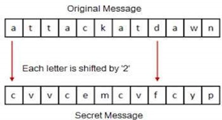

A Ceaser Cipher is rather simple, each letter is replaced by another letter determined by a set number, for example Rot2 simply means to replace each letter by the 2nd letter down.Below is an image representing how the cipher works
image source - http://resources.infosecinstitute.com/an-examination-of-the-caesar-methodology-ciphers-vectors-and-block-chaining/#gref